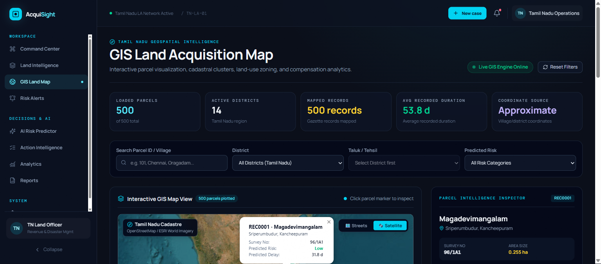

An enterprise decision-support platform designed to eliminate project delays, automate statutory timeline compliance under RFCTLARR 2013, and provide revenue officers with explainable AI risk assessments and live GIS satellite overlays.
Discrepancies in legacy land ownership records (Patta/Chitta) trigger sudden High Court stay orders, freezing road, rail, and industrial corridors for years.
Mandatory Sections 11 & 19 notices lapse unnoticed without predictive tracking, forcing costly restarts and compounding interest penalties.
District collectors lack an integrated view of boundary polygons, satellite imagery, and live compensation status on one synchronized map.
Average delay spans 2.4+ years per project, escalating capital outlay and stalling critical public welfare projects.
Trained regression & classification pipelines that estimate delay in exact days and classify risk levels before tenders are awarded.
Vector and satellite parcel mapping linked with live revenue survey numbers, boundary polygons, and dynamic risk choropleths.
SHAP feature importance breakdowns explaining exact drivers of delay (e.g. court dispute, compensation deficit) to officers.
Context-grounded assistant for statutory compliance, instant draft notifications, and safe continuous retraining with rollback.
• React 18 + Vite + TailwindCSS 4
• Shadcn/UI and Lucide iconography
• Leaflet GIS with Esri Satellite and OSM street layers
• Recharts for real-time risk distribution analytics
• FastAPI (Python 3.11) asynchronous REST API
• Pre-trained Scikit-Learn delay regression & risk classification pipelines
• SHAP tree importance calculations for officer accountability
• Automated safe retraining worker with backup rollback
• Tamil Nadu land acquisition records & spatial coordinates
• GIS parcel geo-indices with survey-number mapping
• Live audit log & case history persistence
• Firebase Auth with role-based access control (RBAC)
• Protected officer routes & JWT verification
• Audit trail compliance under Government IT guidelines

Predicts the expected delay duration (e.g. +184 days) using historical acquisition project timelines and socio-economic variables.
Automatically categorizes each acquisition parcel into Low, Medium, High, or Critical urgency tiers for rapid administrative prioritization.
Transparently reveals why a parcel is delayed: e.g. "Pending High Court stay (+34%)", "Title inheritance contest (+28%)", "Compensation award delay (+18%)".
Prescribes statutory remediation: e.g., initiate Section 19 declaration, schedule Lok Adalat fast-track mediation, or release interim awards.
Early alerts prevent statutory expiry 60 days before Section 11/19 deadlines lapse.
Eliminates compounding interest and penalty awards on stalled land parcels.
Validated against real Tamil Nadu district road and rail expansion projects.
High-throughput FastAPI microservice suitable for national scale.
• Frontend on Vercel / Netlify / Firebase CDN
• Backend containerized on Render / NIC MeghRaj Cloud
• Automated CI/CD pipelines on GitHub Actions
• Direct API bridge to Tamil Nilam, Bhoomi, and RoR portals
• Automated title verification via AI document OCR
• Mobile app for Taluk field survey officers
• Computer vision analysis on orthomosaic drone surveys
• Automated tree counting, structure valuation, and encroachment alerts
• 3D digital twin alignment visualization
• Immutable compensation disbursement records
• Public land-owner portal for live status tracking
• Direct Benefit Transfer (DBT) integration
ACQUISIGHT bridges the critical gap between revenue records, statutory timelines, and machine learning intelligence — ensuring public infrastructure projects finish on time and within budget.